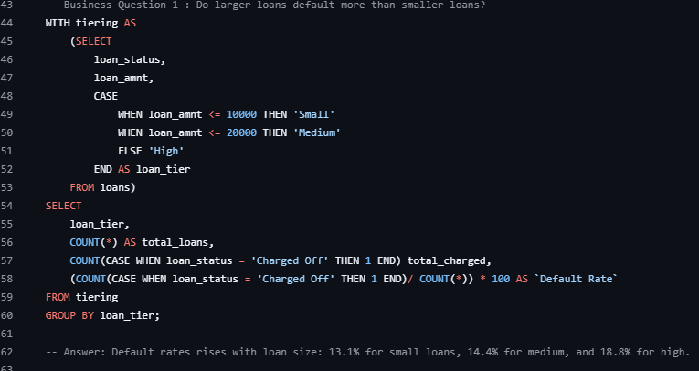

Business problem
Lenders need to understand which segments carry higher historical default risk without confusing observed associations with causal effects. This project examines loan characteristics and a historical policy scenario.
Analysis approach
SQL was used for profiling, data-quality checks, segmentation and business-question analysis. Power BI communicated the portfolio patterns and policy scenario.
Key findings
Underwriting scenario
The scenario is historical and descriptive. It should not be interpreted as a predictive model or proof that changing underwriting rules would produce the same result in the future.
Dashboard
The dashboard presents portfolio volume, charged-off loan amount, risk segmentation, verification and housing patterns, and the policy scenario.

SQL Analysis Spotlight
Business Question: Do larger loans default more than smaller loans?
Used loan-size tiering to compare charged-off rates across small, medium, and high-value loans.
